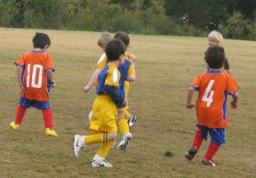

| Match Report - 24 July 2010 |
|
|
|
|
|
|
|
|
|
|

Back to back wins for the first time this season by the White B's, who are looking
totally different to the 6 young kids who started their first match back at the
end of April. There is definitely a real confidence within the team now and rather
than standing around and watching the game happen, everyone is now fighting for
the ball and kicking it forward or desperately running back to snuff out any
attacking plays by the opposition.
Player of the Week this week went to Blake who was basically involved in
everything, whether it was bringing the ball back in defence or making scything
runs through the middle which resulted in a couple of goals. Idan was equally
dangerous in attack, also grabbing a double as well as assisting an opposition
player score an own goal. Christian kept his goal scoring record intact with a
blistering drive into the back of the net, and Reilly mirrored this effort in the
2nd half with a similar goal of his own. Alexis & Joshua both put in good efforts
mainly in defence ensuring the opposition didn't venture too often into goal
scoring territory.

Great result and much deserved

- Will
|
|
|
|
|
|
How good was this performance? The Crazy Gang played some lovely football and got
a nice win after they lost their first games of the season in the last two weeks.
Crazy Finn, Crazy Evan and Crazy Hamish scored most of the goals but superb
tackling, passing and dribbling from Crazy Bomb, Crazy Will and Crazy Annirudh
were the bedrock of the win. A couple of falcons (no tears), some great nutties
and lots of falling over added to the fun of the game - well it made me laugh.
All the boys are playing really well and are coming along great with their
tackling, shooting and dribbling. Each of them are increasing their individual
talents week by week and as each unit gets stronger, the team gets stronger.
However I think it is the passing that amazes most of the parents. The boys are
stringing sets of 3 to 4 passes together, even going across the pitch deep in our
half through four boys from one wing to the other. As the boys have realised that
they have the option of passing, you see they are less inclined to crowd the
player with the ball, moving into space instead, on the understanding that a
pass may come. All of this is mainly due to the boys themselves, getting their
heads up, seeing the options and deciding themselves what to do. In defence they
are getting a good idea of marking players or space to disrupt the other team.
In all the excitement I think most of the parents lost track of the score.
General consensus was that the boys scored between 6 and 8 goals, with 3 against.
The win was good but the way you played the game was outstanding - well done,
boys, we are all proud of you.
- David Hurst
|
|
|
|
|
|
Lots of great stops in goal by Henry in the first half, we often saw him wiping
his brow in relief!
Zac cleared the ball magnificently midfield and Daniel B backed him up with great
driving of the ball though the midfield areas and defended a late attempt for goal
by the other team. William stopped the other side from scoring by demonstrating
the classic "pullback" in our own goal area - what a great save!
Half time pep talk was serious with the concept of the "ball in the garage"
embraced by all players.
In the second half Danny had the rest of the team in fits of laughter as goal
keeper he displayed how to create a "reverse goal" but this was short lived when
Daniel B's persistence paid off to chase the ball and secure a long kick goal for
our team.
William's kick of the centre ball went well into other teams side and Alex managed
to get the ball off a girl during play! Zac showed some more great dribbling and
our second goal came from lots of weaving past defenders by Daniel B. Henry had a
solid game and was rewarded with 2points along with Zac.
Player of the week went to Daniel B as he didn't stop all game and tried all the
time.
Well done guys.
- Leanne
|
|
|
|
|
|
It wasn't the result that we expected for NRS today but our boys showed so much
strength and determination. They never gave up. NRS had a few chances but could
not get through the NMH defence. Eli and Charlie tried to get the ball out to play
but NMH seemed to keep our boys in our half and our defenders (Tom H, Tom M, Jett
and David) had to work very hard to keep NMH away from our goal. Tim was outstanding
and kept himself cool to save many goals. NMH scored 2 goals in the first half.
Their football skills were excellent.
Second half our first goal, thanks to Adam and a great pass by Shannon. Patrick,
Chris and Oscar worked hard to support and put the ball through. We thought we could
equalise the score but our defence was no match for NMH as they scored their third
goal. Our boy's determination was still in check and we narrowly missed another
opportunity to score a goal but our hopes came alive when Adam kicked a high ball
over the keeper's head and into the net to reward us with our second goal for the
day. NMH kept Jack busy all day but he put up a great fight to stop their progress
in our territory. With a few minutes left for the second half, NMH managed to put
another one on the score board. When the final whistle blew the score was NMH 4 -
NRS 2. Congratulations NMH and well done NRS. We will be the winners next time we
meet.
- The Glovers
|
|
|
|
|
|
On Saturday 24 July North Ryde played against Epping YMCA in the last official
match of the season draw. The parents/friends were there to support our team
as usual.
The fields were muddy and the boy's minds were not always on the job of playing
soccer or winning the game. There seemed to be a lot of untapped potential out
there today.
We had a loss today 4-0 to Epping YMCA. There were 3 goals scored in the first
half and 1 in the second. Thanks to the goal keepers Saxon and Andhrea who were
kept busy during the game. Both goal keepers saved many goals.
Good Luck to our team in the last 3 Pennant matches of the season.
- Jenny Marquis
|
|
|
|
|
|
North Ryde - 1 (James Hanna) defeated Eastwood St Andrews - 0
What a day, what a great team effort, what a result!
Boys you made each and every one of your supporters and families at the ground
very proud of you all. To win that game against a side that has dominated much
of the year showed remarkable character,courage and commitment. At last all your
hard work throughout the season was rewarded. Barry and I are both very proud of
you all and extremely pleased for you to achieve this result, the smiles on your
faces Saturday after such a challenging season makes it all worthwhile.
This was by far the best day of the season so far, with every player present on
the day contributing strongly to a fine win. Starting with Sam B in goals who
snuffed out any of Eastwood's goal scoring opportunities with some exceptional
saves there was not a weakness in the side. The back 4 of Victor T, Leo W, Josh C
and Matthew U played unchanged for the full game and their efforts and challenges
snuffed out many attacking raids and assisted Sam B in keeping a clean slate. Well
done to you all for your stamina and courage to keep going for the full game.
The mid fielders Liam T, Lewis B, Gavin H, Tyler R, Ryan N, Tim B and also Scott J
all showed remarkable composure and determination in winning many 50-50 balls and
their domination and commitment to each other helped pave the way for this win.
A special mention to Scott J whose contribution playing although ill typified
the level of commitment shown by the team on the day.Well done Scott hope you
are better now.
William G and James H playing up front continually found their opposing backs
out with their pace and skill. They continually had the opposing defence under
pressure and they were ably assisted by some excellent balls from the midfield,
strong clearances by the backs and some excellent long balls from Sam B in goals.
The pressure applied finally paid off in the second half when a promising attacking
raid resulted in a fumble by the Eastwood goal keeper which Jame H pounced on to
hammer home. This goal was well deserved as the team had much of the running for
the entire game creating many goal-scoring opportunities although for a long while
it once again looked as though the bounce of the ball would cost us a win, however
determination,courage and a strong team spirit and belief in each other was
finally rewarded.
Well done team! We now have 3 round robin games to play for the Pennant. After
this last effort you have given yourselves a really good chance of winning this.
Please be at training Thursday 6-00pm. I will advise game details as soon as they
are available.
- Bill Greer (A Very Proud and Pleased Manager)
|